De la voz nahuatl Itzcoan,"Lugar de obsidiana""Lugar donde se labra la obsidiana".
Desde su llegada, entre un paisaje espectacular de cañaveras, podra sentir el clima calido
de la region invitandolo a visitar alguno de los balnearios del lugar.
Sus iglesias y ex conventos representan parte de sus atractivos, destacando el ex convento
Dominico con su imponente Pila Bautismal de cantera, tambien encontrara edificios de notable
arquitectura civil que datan de los siglos XVI al XVIII.
Refrescantes balnearios en la region invitan al visitante a disfrutar un agradanle fin de
semana.
Su mercado tipico le ofrece el tradicional mole poblano, el pozole estilo Matamoros, pan
barrieco, enjocado(pollo con jocoque y chile guajillo), pipian verde hecho con pepita de
calabaza y tlanilpa, tamales de frijol, podemos citar tambien los alimentos derivados del
maiz como los esquites y el chileatole.
Tambien podra degustar dulces tipicos como alegrias, palanquetas,jamoncillo de pepita,
conservas de mangos, dulces de calabaza, cacahuate garapiñado,pepita garapiñada y obleas de
pepitas de calabaza con caramelo.
Destacan en su ceramica sus coloridos arboles de la vida como artesania principal reconocida
ampliamente, ademas de loza de barro, cera escamada y ceramica policromada.
Santo Domingo De Guzman es el patron de los 14 barrios que componen a izucar, celebrandose su fiesta el 8 de agosto, en cual
asiste el patron de cada barrio asi como el de algunas poblaciones vecinas. cada imagen viene en procesion desde su barrio para
celebrar junto con los demas santos visitantes la historica procesion en el atrio de la iglesia de Santo Domingo.
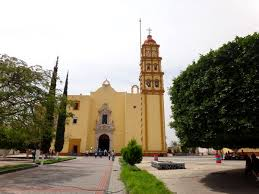
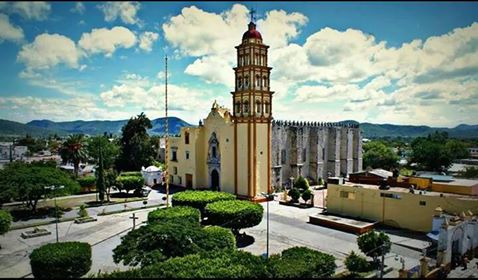
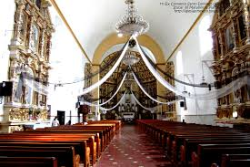
Se empezo a construir a principios del siglo XVI y en ella se encuentra una escultura del apostol Santiago, la cual mide
aproximadamente dos metros y medio siento esta la mas grande de mexico. Su feria se celebra el 25 de Julio y acuden a visitarlo
la imagen de miles de personas provenientes del municipio, del estado e incluso migrantes que viven en Estados Unidos.
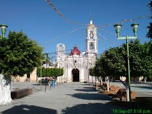
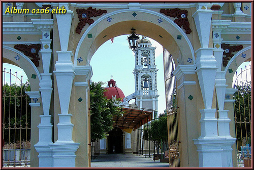
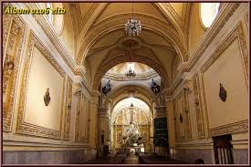
Se construyo en el siglo XVI. En esta casa vivio el cura Don Mariano Matamoros. Fue en este lugar donde varias veces se reunion
con el cura Jose Maria Morelos y Pavon y con Vicente Guerrero para planear perfectamente sus enfrentamientos.
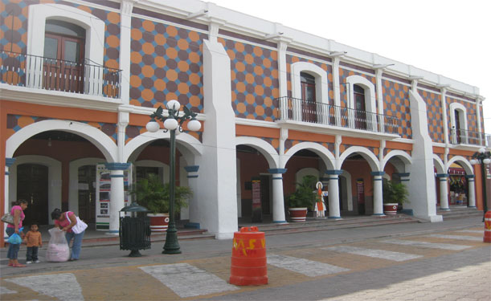
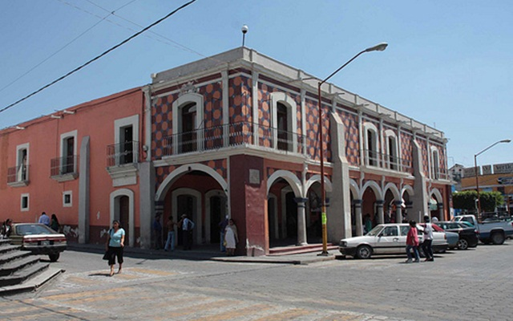
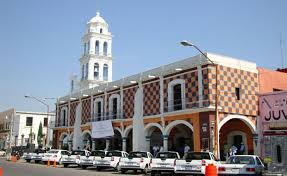
Es de estilo virreinal y data del siglo XVI. En su interior se puede apreciar un murl alegorico de Mariano
Matamoros pintado por Maria Guadalupe Cruz.
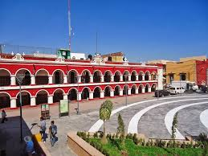
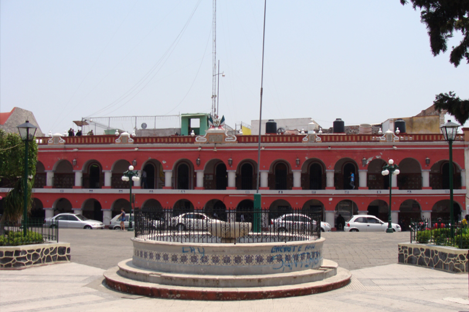
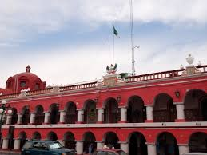
Dentro de la localidad se encuentran los vestigios de bellos acuaductos los cuales formaron parte de los cascos de las 14
haciendas azucarences en la region. Entre los mejor conservados se encuentran: San Nicolas, San Feliz Rijo, San Juan Raboso
San Lucas Mtlala y San Juan Colon.
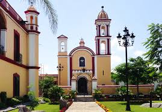
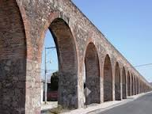
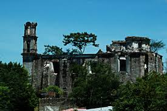
El tianguillo como comunmente se le conoce a este lugar, es un corredor dende se encontrar antojitos y comidas tipicas de la region como son el
pozole,tostadas,tacos,tamales, atolo,esquites,burritas,elotes,pan dulce y ect..
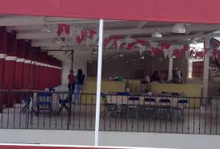
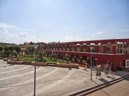
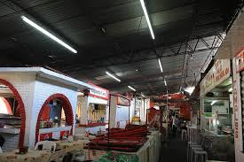